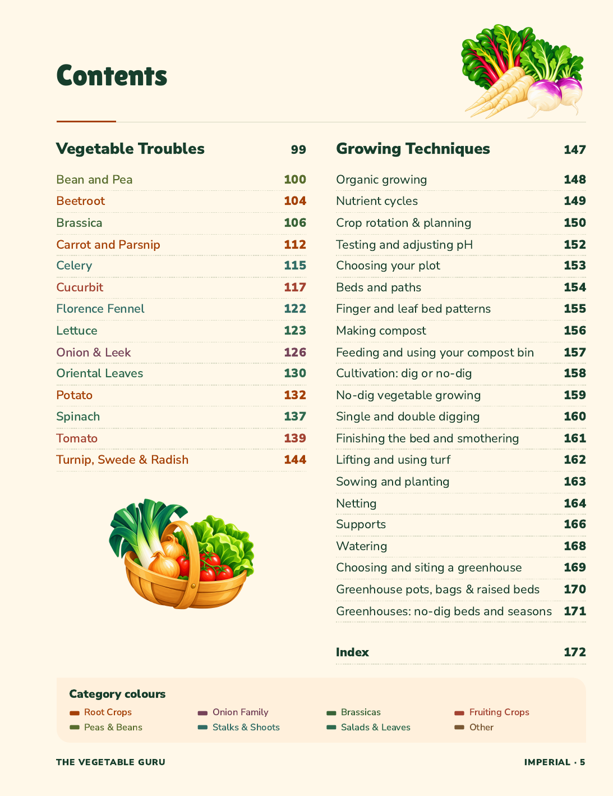
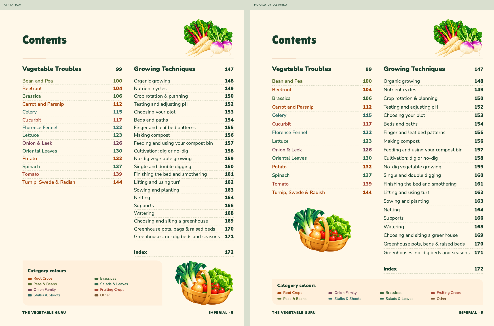
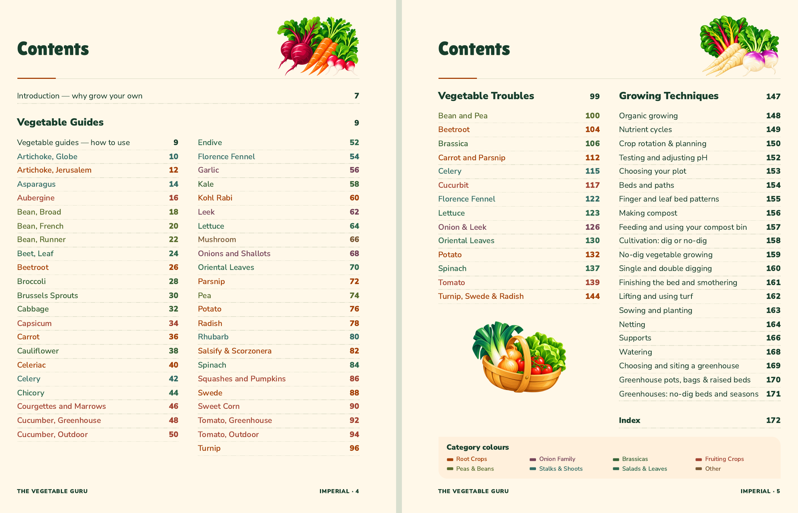

Contents: a shallower colour key
Approved by John on 3 November and integrated into the current book. The harvest basket sits below Vegetable Troubles; the full-width key has four columns of two. The original spacing between entries is restored at the same type size.

Before and approved revision

Facing pages

The main book now includes this composition. This comparison preserves the earlier layout on the left.